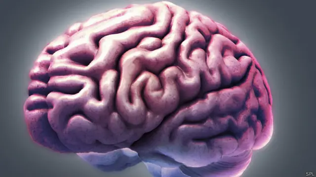
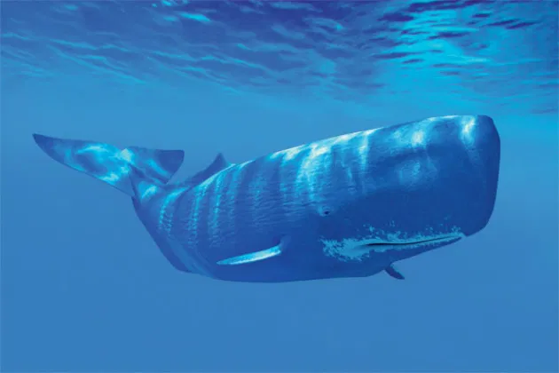
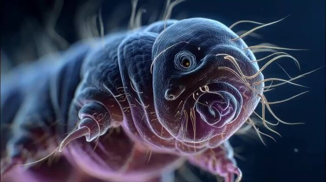

Este site existe por um único motivo: ocupar espaço no seu cérebro com informações que você nunca pediu… mas
agora vai saber mesmo assim.
Aqui você vai descobrir fatos totalmente aleatórios, perfeitos para usar no meio de uma conversa
e fazer
todo mundo perguntar: “por que você sabe disso?” 🤨
Experimentos de neurociência mostram que o cérebro ativa áreas ligadas à decisão vários segundos antes de
você
ter consciência da escolha. Ou seja: quando você acha que decidiu algo, seu cérebro já tinha começado o
processo antes, e a sensação de “livre-arbítrio”
vem depois como uma explicação interna. Isso não
significa
que você não escolhe — mas que a consciência chega atrasada.

Receba o conhecimentoPor causa da gravidade, o tempo passa um pouquinho mais devagar quanto mais perto você está do centro da
Terra. A
diferença entre sua cabeça e seus pés é mínima, mas real e mensurável com relógios atômicos. Tecnicamente,
seus
pés são mais jovens que seu cérebro (por uma fração absurda de segundo).
Baleias usam sons de baixa frequência para se comunicar por centenas de quilômetros. Estudos indicam que
algumas
espécies reconhecem padrões sonoros antigos, como rotas migratórias baseadas em ecos do fundo do mar,
funcionando quase como um
“mapa acústico” transmitido entre gerações.

Receba o conhecimentoAlguns microrganismos chamados extremófilos conseguem viver em ambientes absurdos, como fontes hidrotermais no fundo do oceano, com temperaturas acima de 100 °C, alta pressão e ausência total de luz. Eles obtêm energia de reações químicas, não da luz solar, o que mudou completamente a forma como a ciência entende onde a vida pode existir — inclusive fora da Terra.

Receba o conhecimentoNo nível atômico, os elétrons dos átomos se repelem. Isso significa que quando você “toca” algo, na verdade
está
sentindo a repulsão eletromagnética entre átomos. Tecnicamente, seus dedos nunca encostam de verdade em
nenhuma superfície.
| Área | Curiosidade |
|---|---|
| Neurociência | Decisão antes da consciência |
| Física | Dilatação do tempo na Terra |
| Biologia | Comunicação das baleias |
| Microbiologia | Extremófilos |
| Física | Repulsão entre átomos |